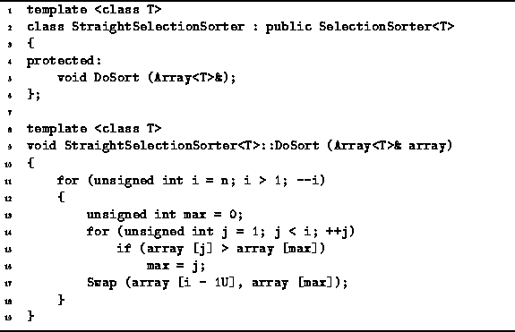

Data Structures and Algorithms
with Object-Oriented Design Patterns in C++
Data Structures and Algorithms
with Object-Oriented Design Patterns in C++
Program  defines the StraightSelectionSorter<T> class.
This class is derived from the abstract Sorter<T> base class
and it provides an implementation for DoSort.
The DoSort routine follows directly from the algorithm discussed above.
In each iteration of the main loop (lines 11-18),
exactly one element is selected from the unsorted elements
and moved into the correct position.
A linear search of the unsorted elements is done in order
to determine the position of the largest remaining element (lines 14-16).
That element is then moved into the correct position (line 17).
defines the StraightSelectionSorter<T> class.
This class is derived from the abstract Sorter<T> base class
and it provides an implementation for DoSort.
The DoSort routine follows directly from the algorithm discussed above.
In each iteration of the main loop (lines 11-18),
exactly one element is selected from the unsorted elements
and moved into the correct position.
A linear search of the unsorted elements is done in order
to determine the position of the largest remaining element (lines 14-16).
That element is then moved into the correct position (line 17).

Program: StraightSelectionSorter<T> Class DoSort Member Function Definition
In all n-1 iterations of the outer loop are needed to sort the array. Notice that exactly one swap is done in each iteration of the outer loop. Therefore, n-1 data exchanges are needed to sort the list.
Furthermore, in the  iteration of the outer loop,
i-1 iterations of the inner loop are required
and each iteration of the inner loop does one data comparison.
Therefore,
iteration of the outer loop,
i-1 iterations of the inner loop are required
and each iteration of the inner loop does one data comparison.
Therefore,  data comparisons are needed to sort the list.
data comparisons are needed to sort the list.
The total running time of the straight selection
DoSort routine is  .
Because the same number of comparisons and swaps are always done,
this running time bound applies in all cases.
I.e., the best-case, average-case and worst-case
running times are all
.
Because the same number of comparisons and swaps are always done,
this running time bound applies in all cases.
I.e., the best-case, average-case and worst-case
running times are all  .
.
 Copyright © 1997 by Bruno R. Preiss, P.Eng. All rights reserved.
Copyright © 1997 by Bruno R. Preiss, P.Eng. All rights reserved.